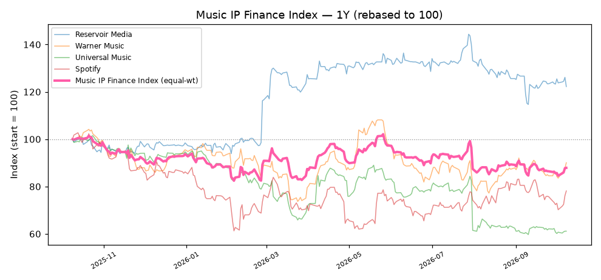

資料日期：2026-10-10 · 產生時間：2026-10-10 06:32 · 每日自動更新 · 🆕 = 近 7 天新資料
更新 2026-10-09 21:28 · 全文命中 58 筆（框內捲動）
楊宜偉犯三人以上共同冒用政府機關及公務員名義詐欺取財罪， 處有期徒刑壹年肆月。 未扣案之臺灣臺北地方法院檢察署傳票貳張沒收。…
Ａ０７幫助犯修正前洗錢防制法第十四條第一項之洗錢罪，處有 期徒刑伍月，併科罰金新臺幣陸萬元，罰金如易服勞役，以新臺 幣壹仟元折算壹日。…
陳銘輝自民國壹佰壹拾伍年拾月拾貳日起延長限制出境、出海捌 月。…
原告之訴及其假執行之聲請均駁回。 訴訟費用由原告負擔。…
一、被告徐國政應給付原告新臺幣伍拾伍萬元。 二、被告黃德盛應給付原告新臺幣捌拾萬元。…
原告之訴及假執行聲請均駁回。 訴訟費用由原告負擔。…
Ａ１４犯附表乙所示之各罪，各處附表乙「主文」欄所示之刑及沒 收。應執行有期徒刑拾月，罰金新臺幣拾萬元，有期徒刑如易科 罰金，罰金如易服勞役，均以新臺幣壹仟元折算壹日。…
余丞修犯如附表「罪名及宣告刑」欄所示之各罪，各處如附表「 罪名及宣告刑」欄所示之刑。應執行有期徒刑壹年伍月。 未扣案之犯罪所得新臺幣壹萬捌仟元沒收，於全部或一部不能沒 收或不宜執行沒收時，追徵其價額。…
許家豪幫助犯洗錢防制法第十九條第一項後段之一般洗錢罪，處 有期徒刑肆月，併科罰金新臺幣壹萬元，有期徒刑如易科罰金， 罰金如易服勞役，均以新臺幣壹仟元折算壹日。緩刑貳年，並應 履行如附件所示之條件。…
Ａ０８犯附表三所示之罪，各處如附表三所示之刑，應執行有期徒 刑拾壹月，併科罰金新臺幣壹萬壹仟元，罰金如易服勞役，以新 臺幣壹仟元折算壹日。緩刑貳年，並應於緩刑期間內接受法治教 育課程貳場次，緩刑期間付保護管束。…
洪碧專幫助犯修正前洗錢防制法第十四條第一項之洗錢罪，處有 期徒刑肆月，併科罰金新臺幣壹萬元，罰金如易服勞役，以新臺 幣壹仟元折算壹日。…
蔡東鋐幫助犯洗錢防制法第十九條第一項後段之洗錢罪，處有期 徒刑伍月，併科罰金新臺幣伍仟元，有期徒刑如易科罰金，罰金 如易服勞役，均以新臺幣壹仟元折算壹日。…
蔡秉訓幫助犯洗錢防制法第十九條第一項後段之一般洗錢罪，處 有期徒刑肆月，併科罰金新臺幣參萬元，有期徒刑如易科罰金、 罰金如易服勞役，均以新臺幣壹仟元折算壹日。緩刑參年，並應 於判決確定翌日起壹年內，向公庫支付新臺幣參萬元。…
吳文心幫助犯洗錢防制法第十九條第一項後段之一般洗錢罪，處 有期徒刑參月，併科罰金新臺幣壹萬元，有期徒刑如易科罰金、 罰金如易服勞役，均以新臺幣壹仟元折算壹日。…
林詩媛幫助犯洗錢防制法第十九條第一項後段之一般洗錢罪，處 有期徒刑肆月，併科罰金新臺幣壹萬元，有期徒刑如易科罰金、 罰金如易服勞役，均以新臺幣壹仟元折算壹日。緩刑參年，並應 依附表所示調解成立內容履行賠償義務。…
黃常軒幫助犯洗錢防制法第十九條第一項後段之一般洗錢罪，處 有期徒刑伍月，併科罰金新臺幣壹萬元，有期徒刑如易科罰金、 罰金如易服勞役，均以新臺幣壹仟元折算壹日。緩刑參年，並應 依附表所示調解成立內容履行賠償義務。…
郭韋妨幫助犯洗錢防制法第十九條第一項後段之一般洗錢罪，處 有期徒刑參月，併科罰金新臺幣貳萬元，有期徒刑如易科罰金、 罰金如易服勞役，均以新臺幣壹仟元折算壹日。…
彭文濱犯如附表三所示之罪，各處如附表三所示之刑及沒收。應 執行有期徒刑伍年陸月。 蔡政佑犯如附表三所示之罪，各處如附表三所示之刑及沒收。應 執行有期徒刑伍年陸月。 晏岱均犯如附表三所示之罪，各處如附表三所示之刑及沒收。應 執行有期徒刑伍年陸月。 扣案如附表六編號1至5所示之物均沒收。…
彭文濱犯如附表三所示之罪，各處如附表三所示之刑及沒收。應 執行有期徒刑伍年陸月。 蔡政佑犯如附表三所示之罪，各處如附表三所示之刑及沒收。應 執行有期徒刑伍年陸月。 晏岱均犯如附表三所示之罪，各處如附表三所示之刑及沒收。應 執行有期徒刑伍年陸月。 扣案如附表六編號1至5所示之物均沒收。…
臺灣嘉義地方法院刑事判決 115年度金易字第58號 公 訴 人 臺灣嘉義地方檢察署檢察官 被 告 張虹惠 上列被告因違反洗錢防制法案件，經檢察官提起公訴（115年度 偵字第4839號），本院判決如下： 主 文 張虹惠無罪。 理 由 一、公訴意旨略以：被告張虹惠知悉任何人無正當理由，不得將 自己或他人向金融機構申請開立之帳戶交付、提供予他人使 用，卻在欠缺符合一般商業、金融交易習慣，亦未基於親友 間信賴關係或其他正當理由之情形下，基於提供3個以上金 融機構帳戶之犯意，於民國114年11月16日下午4時許，在嘉 義市○區○○路0000號嘉義空軍一號明香站，以貨運寄送方式 ，將其申設之台新國際商業銀…
吳佩容犯洗錢防制法第二十二條第三項第二款之無正當…
李亞倫幫助犯洗錢防制法第十九條第一項後段之一般洗錢罪，處 有期徒刑肆月，併科罰金新臺幣肆萬元，有期徒刑如易科罰金、 罰金如易服勞役，均以新臺幣壹仟元折算壹日。…
劉靜宜犯三人以上共同詐欺取財罪，處有期徒刑壹年拾月。 未扣案之犯罪所得新臺幣參仟元沒收，於全部或一部不能沒收或 不宜執行沒收時，追徵其價額。…
林吉田犯詐欺犯罪危害防制條例第四十四條第一項第一款之三人 以上共同冒用政府機關及公務員名義而犯詐欺取財罪，處有期徒 刑壹年捌月。附表二所示之偽造印文沒收；未扣案之附表三所示 等物品均沒收，如全部或一部不能沒收或不宜執行沒收時，追徵 其價額。 犯 罪…
王敏卉犯三人以上共同詐欺取財罪，處有期徒刑壹年參月。又犯 三人以上共同詐欺取財罪，處有期徒刑壹年壹月。應執行有期徒 刑壹年陸月。緩刑參年，緩刑期間付保護管束，並依如附表一所 示之方式，向如附表一所示之告訴人支付如附表一所示金額之損 害賠償，且應於本判決確定之日起壹年內，向檢察官指定之政府 機關、政府機構、行政法人、社區或其他符合公益目的之機構或 團體，提供肆拾小時之義務勞務，暨參加法治教育貳場次。…
趙培智共同犯洗錢防制法第十九條第一項後段之洗錢罪，處有期 徒刑肆月，併科罰金新臺幣參仟元，有期徒刑如易科罰金，罰金 如易服勞役，均以新臺幣壹仟元折算壹日。緩刑貳年，並應於本 判決確定之日起陸個月內，向公庫支付新臺幣陸仟元。 未扣案之犯罪所得新臺幣壹佰伍拾元沒收，於全部或一部不能沒 收或不宜執行沒收時，追徵其價額。…
Ａ０４幫助犯修正前詐欺犯罪危害防制條例第四十三條前段之三人 以上共同詐欺取財且詐欺獲取之財物達新臺幣五百萬元罪，處有 期徒刑貳年。緩刑伍年，緩刑期間付保護管束，並應於本判決確 定之日起參年內，向檢察官指定之政府機關、政府機構、行政法 人、社區或其他符合公益目的之機構或團體，提供貳佰肆拾小時 之義務勞務，暨參加法治教育拾貳場次。…
吳振豪幫助犯修正前洗錢防制法第十四條第一項之洗錢罪，處有 期徒刑陸月，併科罰金新臺幣柒萬元，罰金如易服勞役，以新臺 幣壹仟元折算壹日。 林瀚維幫助犯修正前洗錢防制法第十四條第一項之洗錢罪，處有 期徒刑陸月，併科罰金新臺幣伍萬元，罰金如易服勞役，以新臺 幣壹仟元折算壹日。…
蘇品旭犯三人以上共同詐欺取財罪，處有期徒刑壹年貳月；未扣 案之犯罪所得新臺幣壹仟元沒收，於全部或一部不能沒收或不宜 執行沒收時，追徵其價額。 林君豪犯三人以上共同詐欺取財罪，處有期徒刑壹年貳月；未扣 案之犯罪所得新臺幣壹仟伍佰元沒收，於全部或一部不能沒收或 不宜執行沒收時，追徵其價額。又犯三人以上共同詐欺取財罪， 處有期徒刑壹年貳月；未扣案之犯罪所得新臺幣玖佰元沒收，於 全部或一部不能沒收或不宜執行沒收時，追徵其價額。…
李宸緯犯三人以上共同詐欺取財罪，處有期徒刑壹年伍月。又犯 三人以上共同詐欺取財罪，處有期徒刑壹年伍月。又犯三人以上 共同詐欺取財罪，處有期徒刑壹年陸月。…
蔡易峻犯三人以上共同詐欺取財罪，共肆拾玖罪，各處有期徒刑 壹年貳月。 扣案之現金新臺幣玖萬玖仟元、IPHONE 14 PRO MAX手機壹支（ 含SIM卡壹張）、中華郵政股份有限公司帳號000-0000000000000 0號、000-00000000000000號提款卡各壹張均沒收。 未扣案之犯罪所得新臺幣捌萬元沒收，於全部或一部不能沒收或 不宜執行沒收時，追徵其價額。…
林宗慶三人以上共同犯詐欺取財罪，共肆罪，各處如附表所示之 刑(含沒收)。 犯 罪…
陳信彰犯如附表一編號㈠、㈡、㈢、㈥所示之三人以上共同詐欺取財 罪，各處如附表一編號㈠、㈡、㈢、㈥所示之刑。 顏民欽犯如附表一編號㈣、㈤所示之三人以上共同詐欺取財罪，各 處如附表一編號㈣、㈤所示之刑。…
謝政欣三人以上共同犯詐欺取財罪，共伍罪，各處如附表所示之 刑(含沒收)。 犯 罪…
Ａ１４犯三人以上共同詐欺取財罪，共捌罪，各處有期徒刑壹年貳 月。 未扣案之犯罪所得共計新臺幣壹萬陸仟元沒收，於全部或一部不 能沒收或不宜執行沒收時，追徵其價額。…
王一三幫助犯修正前洗錢防制法第十四條第一項之洗錢罪，處有 期徒刑陸月，併科罰金新臺幣拾萬元，罰金如易服勞役，以新臺 幣壹仟元折算壹日。…
鍾侑廷犯修正前詐欺犯罪危害防制條例第四十四條第一項第一款 之三人以上共同冒用公務員名義詐欺取財罪，處有期徒刑壹年。 其餘被訴部分無罪。 扣案之Apple廠牌、型號IPhone 十三之行動電話（IMEI碼：○○○○ ○○○○○○○○○○○號，含SIM卡壹張）壹支沒收。…
臺灣臺北地方法院民事判決 115年度重訴字第204號 原 告 蔡耀銘 訴訟代理人 詹豐吉律師 複 代理人 鐘煒翔律師 被 告 葉哲銘 沈富揚 顏希珈 林品慧 （另案在法務部○○○○○○○○○○○○○執行中） 黃有志 蔡百翔 上列當事人間請求侵權行為損害賠償等事件，原告提起刑事附帶 民事訴訟（114年度重附民字第88號），經本院刑事庭裁定移送 前來，本院於民國115年9月9日言詞辯論終結，判決如下： 主 文 一、被告葉哲銘、沈富揚應連帶給付原告新臺幣參拾萬元，及其 中被告葉哲銘自民國一百一十四年三月二十六日起、被告沈 富揚自民國一百一十四年三月二十八日起，均至清償日止， 按週年利率百分之五計算之…
被告羅文鴻應給付原告新臺幣壹仟萬元，及自民國一一五年二月 八日起至清償日止，按週年利率百分之五計算之利息。 被告楊景年應給付原告新臺幣貳佰萬元，及自民國一一五年一月 二十八日起至清償日止，按週年利率百分之五計算之利息。 訴訟費用由被告羅文鴻負擔百分之八十三，餘由被告楊景年負擔 。 本判決第一項於原告以新臺幣壹佰萬元供擔保後，得假執行；但 被告羅文鴻如以新臺幣壹仟萬元為原告預供擔保後，得免為假執 行。 本判決第二項於原告以新臺幣貳拾萬元供擔保後，得假執行；但 被告楊景年如以新臺幣貳佰萬元為原告預供擔保後，得免為假執 行。…
原告之訴駁回。 訴訟費用由原告負擔。…
一、Ｂ１４、Ａ０７、Ｂ１１、Ｂ１２各犯如附表一主文欄所示之罪，各處如 附表一主文欄所示之刑。 扣案Ｂ１１所有之iPhone 13手機（含SIM卡壹枚，IMEI碼：000 00000000000）壹支沒收；未扣案Ｂ１４之犯罪所得新臺幣參仟 捌佰元沒收，於全部或一部不能沒收或不宜執行沒收時，追 徵其價額。 二、Ｂ１６無罪。…
楊明德幫助犯洗錢防制法第十九條第一項後段之一般洗錢罪，處 有期徒刑陸月，併科罰金新臺幣壹萬元，有期徒刑如易科罰金、 罰金如易服勞役，均以新臺幣壹仟元折算壹日。 未扣案之如附件起訴書所示Max、Maicoin虛擬帳戶、臺灣土地銀 行帳號00000000000號帳戶、彰化商業銀行帳號00000000000000號 帳戶，均沒收。…
卓福祥幫助犯洗錢防制法第十九條第一項後段之洗錢罪，處有期 徒刑貳月，併科罰金新臺幣伍仟元，有期徒刑如易科罰金，罰金 如易服勞役，均以新臺幣壹仟元折算壹日。…
張宗榮幫助犯洗錢防制法第十九條第一項後段之洗錢罪，處有期 徒刑肆月，併科罰金新臺幣貳萬元，有期徒刑如易科罰金，罰金 如易服勞役，均以新臺幣壹仟元折算壹日。…
蕭嘉慶幫助犯修正前洗錢防制法第14條第1項之一般洗錢罪，處 有期徒刑貳月，併科罰金新臺幣壹萬元，罰金如易服勞役，以新 臺幣壹仟元折算壹日。附表所示之帳戶沒收。…
黃靖捷犯修正前詐欺犯罪危害防制條例第四十三條前段之三人以 上共同詐欺取財且詐欺獲取之財物達新臺幣五百萬元罪，處有期 徒刑參年貳月。未扣案如附表編號一所示之物沒收之，於全部或 一部不能沒收或不宜執行沒收時，追徵其價額。如附表編號二所 示之物沒收之。…
李奕霖犯三人以上共同詐欺取財罪，處有期徒刑壹年陸月。 鍾政宏犯三人以上共同詐欺取財罪，處有期徒刑貳年陸月。…
古志霖犯如附表所示之罪，各處如附表所示之刑。未扣案之犯罪 所得新臺幣壹萬壹仟元沒收，於全部或一部不能沒收或不宜執行 沒收時，追徵其價額。…
黃蘭亭犯修正前詐欺犯罪危害防制條例第四十三條前段之三人以 上共同詐欺取財且詐欺獲取之財物達新臺幣五百萬元罪，處有期 徒刑參年；又犯修正前詐欺犯罪危害防制條例第四十三條前段之 三人以上共同詐欺取財且詐欺獲取之財物達新臺幣五百萬元罪， 處有期徒刑參年參月。應執行有期徒刑參年拾月。 扣案如附表二編號一所示之物沒收之。未扣案如附表二編號二至 編號四所示之物均沒收之，於全部或一部不能沒收或不宜執行沒 收時，均追徵其價額。…
李旺蓉犯三人以上共同詐欺取財罪，處有期徒刑壹年肆月。未扣 案如附表二編號1所示之物沒收。 林雅婷犯三人以上共同詐欺取財罪，處有期徒刑貳年參月。未扣 案如附表二編號2所示之物、扣案如附表二編號3所示之物均沒收 。…
陳睿明犯三人以上共同詐欺取財罪，處有期徒刑壹年伍月。…
。 本案經檢察官林虹伶偵查起訴及檢察官林書伃追加起訴，檢察官 黃孟珊到庭執行職務。 中 華 民 國 115 年 9 月 29 日 刑事第十五庭 法 官 吳宗航 上列正本證明與原本無異。 如不服本判決，應於判決送達後20日內敘明上訴…
吳松璋三人以上共同犯詐欺取財罪，處有期徒刑陸月，併科罰金 新臺幣拾貳萬元，罰金如易服勞役，以新臺幣壹仟元折算壹日； 又三人以上共同犯詐欺取財罪，處有期徒刑陸月。有期徒刑部分 應執行有期徒刑柒月。緩刑參年，並應依本院一一五年度司刑移 調字第五三九號調解筆錄內容履行，且應依如附表一所示之內容 向賴宣妤支付新臺幣捌仟元。 未扣案如附表二所示之物沒收之，於全部或一部不能沒收或不宜 執行沒收時，追徵其價額。…
陳冠燊幫助犯修正前洗錢防制法第十四條第一項之洗錢罪，處有 期徒刑捌月，併科罰金新臺幣肆萬元，罰金如易服勞役，以新臺 幣壹仟元折算壹日。 未扣案之犯罪所得新臺幣伍萬元沒收，於全部或一部不能沒收或 不宜執行沒收時，追徵其價額。…
陳俐君犯三人以上共同詐欺取財罪，處有期徒刑陸月。…
黃振濠幫助犯洗錢防制法第十九條第一項後段之洗錢罪，處有期 徒刑參月，併科罰金新臺幣壹萬元，有期徒刑如易科罰金，罰金 如易服勞役，均以新臺幣壹仟元折算壹日。…
何婕歆犯三人以上共同詐欺取財罪，處有期徒刑壹年捌月。…
邱語婕犯三人以上共同詐欺取財罪，處有期徒刑壹年貳月。 未扣案之存款憑證壹張沒收。…
Patrick H. Perea has been indicted by a federal grand jury on one count of fraudulent voting.…
Greenbelt, Maryland – A federal grand jury indicted a Maryland man, today, in connection with a COVID-19 healthcare fraud scam. Marc Aaron Potash, 57, of Rockville, is charged with conspiracy to commit healthcare fraud a…
Orlando, Florida – Khayyam Arif Oglu Farajov (40), an Azerbaijani national, has pleaded guilty to one count of wire fraud and one count of money laundering in connection with a scheme to fraudulently obtain payments from…
Jacksonville, Florida – A federal jury has found Treashonna P. Graham (42, Lake City) guilty of all charges in a 13-count indictment, including conspiracy to commit wire fraud and multiple counts of wire fraud and money…
Seattle – A 54-year-old former attorney was sentenced yesterday in U.S. District Court in Seattle to two years in prison for wire fraud for his theft of more than $1.5 million from an estate he was hired to probate, anno…
The Securities and Exchange Commission today proposed amendments to the Investment Company Act “cross-trading rule,” which permits transactions in securities between a registered fund and its affiliates under certain con…
Point-of-novelty claims are rare: Jepson claims appear in 0.03% of U.S. patents, and the European two-part form in well under 1%. Continue reading this post on Patently-O.…
Chief Judge Moore rebukes J&M's counsel for touting credentials at Markman, yet the panel signals that "askewed angle" is broad, not indefinite. Continue reading this post on Patently-O.…
Federal Circuit grants mandamus in In re Google, moving USC v. Google from Austin to N.D. Cal. weeks after Judge Albright left the bench. Continue reading this post on Patently-O.…
In Epic Tech v. Pen-Tech, the Federal Circuit says the presumption of validity alone does not suffice when a patentee has notice of ineligibility. Continue reading this post on Patently-O.…
Final FY2026 numbers: 315,825 utility grants, continuing applications at 26% of grants, US-origin share at 39%, published applications down 6%, and cross-border inventor teams on a record 10.7% of patents. Continue readi…
設計專利系列(一) - 設計侵權標準與案例解析 - 上傳版 Ron…
之前的最高法院民事裁定報導：犀牛盾RHINOSHIELD v. 惡魔殼DEVILCASE「違反公平交易法」之判決 - 最高法院民事裁定113年度台上字第1585號（https://enpan.blogspot.com/2024/10/rhinoshield-v-devilcase-1131585.html）。以下筆記3審內容：整理多個判決參數：第(1)審：智慧財產及商業法院 110 年度 民公訴 字第 9 號判決(112.06.06)（…
Follow之前Tesla v. Nikola報導的後續（CNN：https://edition.cnn.com/2022/01/05/business/nikola-drops-suit-tesla）。可先參考：Tesla仿冒了Nikola的設計嗎？（https://enpan.blogspot.com/2020/10/teslanikola.html）Follow新聞先跳出這個：被這些怪獸用訴訟拖著的代價就是20億美元與下台，不過，…
SK hynix has taken Longhorn IP back to court, challenging infringement allegations over eight former TSMC patents and accusing the licensing company of using a new affiliate to pursue additional licensing demands despite…
Enrico Bonadio and various coauthors have recently published several papers on SEP/FRAND issues in the European Intellectual Property Review. All of these are available on Westlaw, in case you don’t have a standalone sub…
ETRI claims that Disney was repeatedly contacted by Access Advance to take a (F)RAND license to the VDP pool, which would cover the asserted patents.…
During its annual Bridge Summit in San Francisco today, which will largely focus on opportunities and strategies in AI patent licensing, Via Licensing Alliance announced Japan’s Nidec Mobility Corporation and China’s OPP…
The Hague District Court has upheld Halozyme’s patent and found infringement. Merck’s subcutaneous cancer drug is blocked in eight European countries, but Merck strongly disagrees, alleging the patent is invalid.…
BlackBerry also reported that it received patents as part of a customer contract, though it isn't clear if that customer could've been Google.…
Last week I mentioned that IIC (the International Review of Intellectual Property and Competition Law, published by the Max Planck Institute in Munich) had published an editorial by Richard Arnold titled A Jurisdictional…
Lord Justice Richard Arnold has published an editorial titled A Jurisdictionally Neutral Approach to SEP/FRAND Disputes?, 57 IIC 613 (2026). The essay argues that the best solutions to jurisdictional conflict in SEP/FRAN…
My new article “Process Tracing China’s Pharmaceutical IP Reforms: Foreign Pressure, Domestic Innovation, and Institutional Change” is now available on SSRN at https://papers.ssrn.com/sol3/papers.cfm?abstract_id=7472640.…
Chen Fuli’s appointment as Party Secretary of CNIPA brings an experienced trade lawyer, diplomat and legislator into the agency’s top leadership as Shen Changyu prepares to move to WIPO. Chen previously served as China’s…
Join us on September 10 for a free, virtual Asia Society Northern California program, “Critical Minerals, Technology, and the Future of U.S.-China Competition,” featuring Walter Copan, Gloria Xiong, and Cory Combs. We wi…
On the 100th anniversary of my father Ronald Cohen’s birth, I look back at two public-health innovations he helped develop: a blocked-flue safety control designed to prevent carbon monoxide poisoning in New York City ten…
Why does China increasingly treat intellectual property as a strategic instrument of national development, international influence, and global governance while the United States often continues to view it primarily throu…
National Radio and Television Administration General Office Guang Dian Ban Fa (2021) 267 All provincial, autonomous region and municipal radio and television bureaus, the Xinjiang Production-Construction Corps Culture, S…
All provincial, autonomous region and municipal Party Committee cybersecurity and informatization offices, the Xinjiang Production-Construction Corps Party Committee Cybersecurity and Informatization Office” Since the “C…
YBJBF No. (2021)24 All banking supervisory bureaus, all large-scale banks, shareholding-type banks and foreign invested banks: In order to promote commercial banks to effectively implement the “Provisional Rules for the…

| 標的 | 價格 | 近1年 |
|---|---|---|
| Reservoir Media RSVR | 9.60 | +26.3% |
| Warner Music WMG | 28.72 | -10.5% |
| Universal Music UMG.AS | 14.68 | -36.6% |
| Spotify SPOT | 529.14 | -22.8% |
| 音樂 IP 金融指數 INDEX | — | -10.9% |
California’s Governor Gavin Newsom has released an Executive Order concerning the regulation of artificial intelligence including the creation of a “kill switch.” The Press Release is below and includes a summary of othe…
Generative AI is shifting digital rights management from access control to managing an ongoing rights relationship across training, inference, and output. Addressing linked challenges in provenance, identification, attri…
The rapid development of Generative Artificial Intelligence (GenAI) has gradually intensified the debate around the lawful use of copyrighted works during the training phase of AI models. GenAI works by processing a larg…
Objective: This article presents a comparative legal analysis of NFT regulation in the Russian Federation, the Republic of Uzbekistan, and the United States of America, three jurisdictions that have adopted markedly diff…
The traditional knowledge held by indigenous communities in Indonesia faces new threats with the development of the digital economy, ranging from data mining by generative artificial intelligence to the tokenization of n…
Abstract Access-based consumption, defined as transactions that may be market mediated in which no transfer of ownership takes place, is conceptualized by Bardhi and Eckhardt (2012). While it was introduced to explore co…
Non-fungible tokens (NFTs) now attract personal property rights but continue to challenge existing copyright law. NFTs consist of a digital file, which is either linked to or embedded within a CryptoToken. Copyright in a…
This study investigates the legal status of Non-Fungible Tokens (NFTs) from an Islamic perspective. NFTs, as unique digital assets recorded on blockchain, raise complex questions in Shariah due to their intangible nature…
The voracious appetite of Generative Artificial Intelligence (GenAI) for data has raised a number of issues regarding copyright. We conducted a systematic literature review (SLR), focusing on the types of copyright-prote…
(Slip Opinion) OCTOBER TERM, 2025 1 Syllabus NOTE: Where it is feasible, a syllabus (headnote) will be released, as is being done in connection with this case, at the time the opinion is issued. The syllabus constitutes…
PRELIMINARY PRINT Volume 601 U. S. Part 2 Pages 366–376 OFFICIAL REPORTS OF THE SUPREME COURT May 9, 2024 Page Proof Pending Publication REBECCA A. WOMELDORF reporter of decisions NOTICE: This preliminary print is subjec…
UNITED STATES DISTRICT COURT FOR THE DISTRICT OF COLUMBIA _________________________________________ ) STEVEN LEONEL ARIAS, ) ) Plaintiff, ) ) v. ) ) Case No. 21-cv-02551 (APM) UNIVERSAL MUSIC GROUP…
20-3816 ABKCO Music, Inc. v. Sagan 1 UNITED STATES COURT OF APPEALS 2 FOR THE SECOND CIRCUIT 3 ____________________ 4 5 August Term, 2021 6 7 (Argued: March 14, 2022 Decided: October 6, 2022) 8 9 Docket Nos. 20-3816(L),…
17‐3595‐cv Ennio Morricone Music v. Bixio Music Group United States Court of Appeals for the Second Circuit AUGUST TERM 2018 No. 17‐3595‐cv ENNIO MORRICONE MUSIC INC., Plaintiff‐Appellant, v. BIXIO MUSIC GROUP LTD.,…
The convergence of Metaverse technologies and Generative AI (GenAI) is reshaping immersive digital education. This study presents a scoping review of Metaverse and GenAI-enabled education following the PRISMA Extension f…
This chapter explores the convergence of Blockchain and Artificial Intelligence as foundational technologies for secure, transparent, and intelligent smart-contract ecosystems in Construction 6.0. It highlights how block…
The paper substantiates the proposition that, against the backdrop of the rapid development of digital technologies and during the rise of decentralized finance (DeFi), AI services, infrastructure projects, and other are…
Smart-contract exploits are a defining operational risk in decentralized finance (DeFi), yet their protocol-level liquidity effects remain poorly measured. We assemble 197 exploit and bridge-attack episodes across 51 cha…
Crypto assets and decentralised finance represent one of the most significant innovations of this century. They constitute the new frontier of blockchain technology and the global market, promising investors a system wit…
This thesis examines the conceptual and practical tensions arising from the integration of blockchain technology into established systems of public and corporate governance. Originally developed within cypherpunk circles…
IN THE COURT OF CHANCERY OF THE STATE OF DELAWARE HASH ASSET MANAGEMENT LTD., ) ) Plaintiff, ) ) v. ) C.A. No. 2025-0374-BWD ) DMA LABS, INC., ICHI ) FOUNDATION, NICK POORE, ) BRYAN GROSS, TYLER CHRISTIAN ) PINTAR, and J…
Filed 1/15/25 CERTIFIED FOR PUBLICATION IN THE COURT OF APPEAL OF THE STATE OF CALIFORNIA FIRST APPELLATE DISTRICT DIVISION TWO PARAFI DIGITAL OPPORTUNITIES LP et al., Plaintiffs and Appellants, A168960 v. (San Francisco…
Case: 23-50669 Document: 123-1 Page: 1 Date Filed: 11/26/2024 United States Court of Appeals for the Fifth Circuit United States Court of Appeals Fifth Circuit ____________ FILED November 26, 2024…